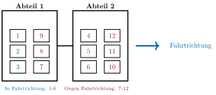

Aufgabe 1.10
Eine Reisegruppe aus 12 Personen verteilt sich auf 2 Abteile eines Zuges. Jedes Abteil hat 3 Sitzplätze in Fahrtrichtung und 3 entgegen der Fahrtrichtung. Aus der Reisegruppe wollen auf alle Fälle 5 Personen in Fahrtrichtung und 4 entgegen sitzen. Wie viele Möglichkeiten der Platzierung gibt es bei nummerierten Plätzen?
- Zeichnen Sie eine Skizze der Sitzplätze mit Nummern
- Teilen Sie das Problem in drei Gruppen auf: Personen mit Präferenz «in Fahrtrichtung», «gegen Fahrtrichtung» und «egal»
- Verteilen Sie jede Gruppe separat auf die entsprechenden Plätze
- Nutzen Sie k-Permutationen für jede Gruppe
Schritt 1: Situation verstehen und visualisieren
Eine Skizze hilft enorm beim Verständnis:

Wir haben:
- 6 Plätze in Fahrtrichtung (blau, Nr. 1-6)
- 6 Plätze gegen Fahrtrichtung (rot, Nr. 7-12)
Schritt 2: Personen in Gruppen einteilen
Von den 12 Personen:
- 5 wollen in Fahrtrichtung sitzen
- 4 wollen gegen Fahrtrichtung sitzen
- 3 haben keine Präferenz (12 - 5 - 4 = 3)
Schritt 3: Verteilung berechnen
Wir verteilen die drei Gruppen nacheinander:
Gruppe 1: Die 5 Personen, die in Fahrtrichtung wollen
- Sie werden auf die 6 blauen Plätze (1-6) verteilt
- Das ist eine 5-Permutation aus 6 Elementen
- Anzahl: $\frac{6!}{(6-5)!} = \frac{6!}{1!} = 6 \cdot 5 \cdot 4 \cdot 3 \cdot 2 = 720$
Gruppe 2: Die 4 Personen, die gegen Fahrtrichtung wollen
- Sie werden auf die 6 roten Plätze (7-12) verteilt
- Das ist eine 4-Permutation aus 6 Elementen
- Anzahl: $\frac{6!}{(6-4)!} = \frac{6!}{2!} = 6 \cdot 5 \cdot 4 \cdot 3 = 360$
Gruppe 3: Die 3 Personen ohne Präferenz
- Nach Verteilung von Gruppe 1 und 2 sind noch 3 Plätze frei
- 1 Platz in Fahrtrichtung (6 - 5 = 1)
- 2 Plätze gegen Fahrtrichtung (6 - 4 = 2)
- Die 3 Personen werden auf diese 3 freien Plätze verteilt
- Das ist eine Permutation von 3 Elementen
- Anzahl: $3! = 3 \cdot 2 \cdot 1 = 6$
Schritt 4: Gesamtanzahl nach dem Zählprinzip
Die Verteilungen der drei Gruppen sind unabhängig voneinander:
$$|\Omega| = 720 \cdot 360 \cdot 6 = 1'555'200$$